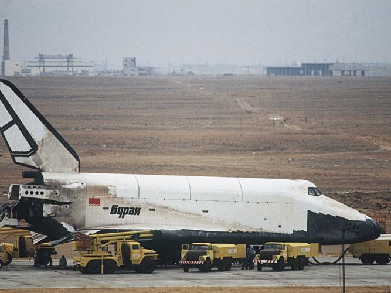

Буран
Первый и единственный космический полёт «Буран» совершил 15 ноября 1988 года в автоматическом режиме, без экипажа на борту
«Буран» предназначался для:
Первый и единственный космический полёт «Буран» совершил 15 ноября 1988 года в автоматическом режиме, без экипажа на борту; больше его не запускали («Буран» был рассчитан на 100 полётов в космос[1]:2). Ряд технических решений, полученных при создании «Бурана», был использован в российской и зарубежной ракетно-космической технике.
выведения на орбиты, обслуживания на них и возвращения на Землю космических аппаратов, космонавтов и грузов; проведения военно-прикладных исследований и экспериментов по обеспечению создания больших космических систем с использованием оружия на давно известных и недавно изученных физических принципах; решения целевых задач в интересах народного хозяйства, науки и обороны; комплексного противодействия мероприятиям вероятного противника по расширению использования космического пространства в военных целях. Как военно-политическая система По мнению зарубежных специалистов «Буран» был ответом на аналогичный американский проект «Спейс шаттл» и задумывался как военная система, которая, впрочем, была ответом на, как тогда считали, планировавшееся применение в военных целях американских шаттлов.
Программа имеет свою предысторию:
В 1972 г. Никсон объявил, что в США начинает разрабатываться программа «Space Shuttle». Она была объявлена как национальная, рассчитанная на 60 пусков челнока в год, предполагалось создать 4 таких корабля; затраты на программу планировались в 5 миллиардов 150 миллионов долларов в ценах 1971 г.
Челнок выводил на околоземную орбиту 29,5 т и мог спускать с орбиты груз до 14,5 т. Вес, выводимый на орбиту при помощи одноразовых носителей в Америке, даже не достигал 150 т/год, а тут задумывалось в 12 раз больше; ничего с орбиты не спускалось, а тут предполагалось возвращать 820 т/год… Это была не просто программа создания какой-то космической системы под девизом снижения затрат на транспортные расходы (наши, нашего института проработки показали, что никакого снижения фактически не будет наблюдаться), она имела явное целевое военное назначение.

Характеристики
Стартовая масса 105 т
Двигатель блока "А" (РД-170)
Двигатель блока "Ц" (4 шт. РД-0120)
Габариты
Длина 36,4 м
Ширина 24 м
Высота 16,5 м
Диаметр 5,6 м
Полезный объём 350 м3
Экипаж от 2 до 10 человек
Полезный объём 350 м3